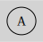

Diagram Attributes
Background
The generated SVG has no background by default.
from sp_svg_diagram import SVGDiagram
diagram = SVGDiagram()
diagram.set_background_color("lightgray")
node = diagram.add_node("A")
node.set_label("A")
svg = diagram.render()
import { SVGDiagram } from 'sp-svg-diagram';
const diagram = new SVGDiagram();
diagram.setBackgroundColor("lightgray");
const node = diagram.addNode("A");
node.setLabel("A");
const svg = diagram.render();
#include "svg_diagram.h"
using namespace svg_diagram;
int main() {
SVGDiagram diagram;
diagram.setBackgroundColor("lightgray");
const auto node = diagram.addNode("A");
node->setLabel("A");
diagram.render("background_color.svg");
return 0;
}
